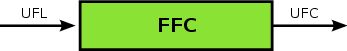

Primary author and maintainer¶
Harish Narayanan

FEniCS is organized as a collection of interoperable components that together form the FEniCS Project. A short overview of these components is given below. Further information can be found in the FEniCS Book and on the Bitbucket page.
DOLFIN is a C++/Python library that functions as the main user interface of FEniCS. A large part of the functionality of FEniCS is implemented as part of DOLFIN. It provides a problem solving environment for models based on partial differential equations and implements core parts of the functionality of FEniCS, including data structures and algorithms for computational meshes and finite element assembly. To provide a simple and consistent user interface, DOLFIN wraps the functionality of other FEniCS components and external software, and handles the communication between these components.
Johan Hake, Anders Logg, Garth N. Wells
Anders Logg, Johan Hoffman, Garth N. Wells, Johan Jansson, Ola Skavhaug, Kent-Andre Mardal, Martin Sandve Alnes, Johan Hake, Niclas Jansson, Johannes Ring, Kristian B. Ølgaard, Marie Rognes
For a full list of contributors, refer to the file AUTHORS in the DOLFIN source tree.
One of the key features of FEniCS is automated code generation for the general and efficient solution of finite element variational problems. FFC (FEniCS Form Compiler) is a compiler for variational forms. It generates efficient low-level C++ code (UFC) from a high-level mathematical description (UFL) of a finite element variational problem.
Anders Logg, Kristian B. Ølgaard, Marie Rognes, Garth N. Wells
FIAT (FInite element Automatic Tabulator) supports generation of arbitrary order instances of the Lagrange elements on lines, triangles, and tetrahedra. It is also capable of generating arbitrary order instances of Jacobi-type quadrature rules on the same element shapes. Further, H(div) and H(curl) conforming finite element spaces such as the families of Raviart-Thomas, Brezzi-Douglas-Marini and Nedelec are supported on triangles and tetrahedra. Upcoming versions will also support Hermite and nonconforming elements.
Robert C. Kirby
Instant is a Python module that allows for instant inlining of C and C++ code in Python. It is a small Python module built on top of SWIG and Distutils. Instant is used by FFC and DOLFIN for just-in-time (JIT) compilation of variational forms and expressions.
Note
Add list of Instant maintainers.
UFC (Unified Form-assembly Code) is a unified framework for finite element assembly. More precisely, it defines a fixed interface for communicating low level routines (functions) for evaluating and assembling finite element variational forms. The UFC interface consists of a single header file ufc.h that specifies a C++ interface that must be implemented by code that complies with the UFC specification.
Anders Logg, Martin Sandve Alnes, Garth N. Wells
UFL (Unified Form Language) is a domain specific language for declaration of finite element discretizations of variational forms. More precisely, it defines a flexible interface for choosing finite element spaces and defining expressions for weak forms in a notation close to mathematical notation.
Martin Sandve Alnes
Dorsal is a shell script that simplifies the installation of FEniCS on operating platforms that we do not support with prebuilt binaries. It does this by automating the process of fetching, compiling, and installing the various FEniCS sub-projects and their requisite dependencies on many different platforms.
Harish Narayanan